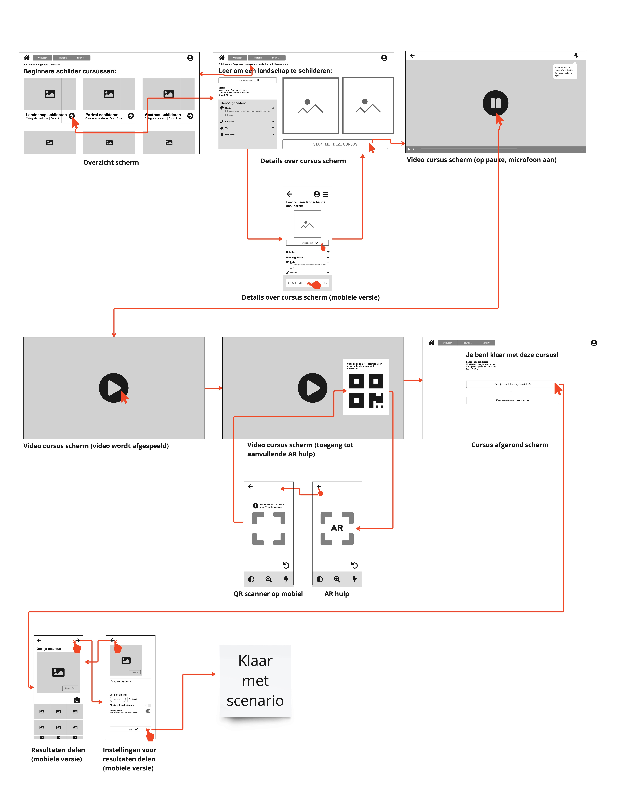

De opdracht was om een interactieve ervaring te ontwerpen die via meerdere apparaten
beleefd zou worden. We hadden zelf de vrijheid om te kiezen over welk onderwerp we
een ervaring wilden maken en welke doelgroep met context daarbij zou horen.
Uiteindelijk was het doel om een hi-fi screenflow op te leveren met een
productbiografie waarin het gehele proces met iteraties was vastgelegd.
Paint It is een multidevice concept die beginnende kunstschilders met behulp van videocursussen en AR hulplijnen kan ondersteunen tijdens het schilderen.
De opdracht
Het proces
Na te hebben gebrainstormd over een idee en een doelgroep, besloot ik voor deze opdracht
een concept te bedenken dat beginnende kunstschilders zou kunnen begeleiden tijdens het
maken van een schilderij. Gebruikers van het concept kunnen een videocursus volgen op
een groot apparaat, zoals een laptop, en daarnaast met behulp van AR op hun mobiel
verdere ondersteuning krijgen tijdens het schilderen.
Ik heb een user journey en een user scenario gemaakt en aan de hand daarvan
productrequirements opgesteld. Ook heb ik onderzoek gedaan naar al bestaande functies
die ik op een bepaalde manier wilde toevoegen aan mijn concept.
Daarna was het tijd om een lo-fi design te maken en aan de hand daarvan een wireflow te
creëren om te kijken of de flow door mijn digitale ervaring goed werkte.
Uiteindelijk heb ik met alle opgedane kennis en feedback van de docent en medestudenten
een hi-fi UI design gemaakt en een screenflow.
Details
- Opdracht voor het project 'Responisve Multi Device Design' voor de studie CMD
- Individuele opdracht
- Duur van het project: 3 weken
- Gebruikte tools: Adobe XD, Adobe Illustrator, Miro
Resultaten
Wireflow
Screenflow